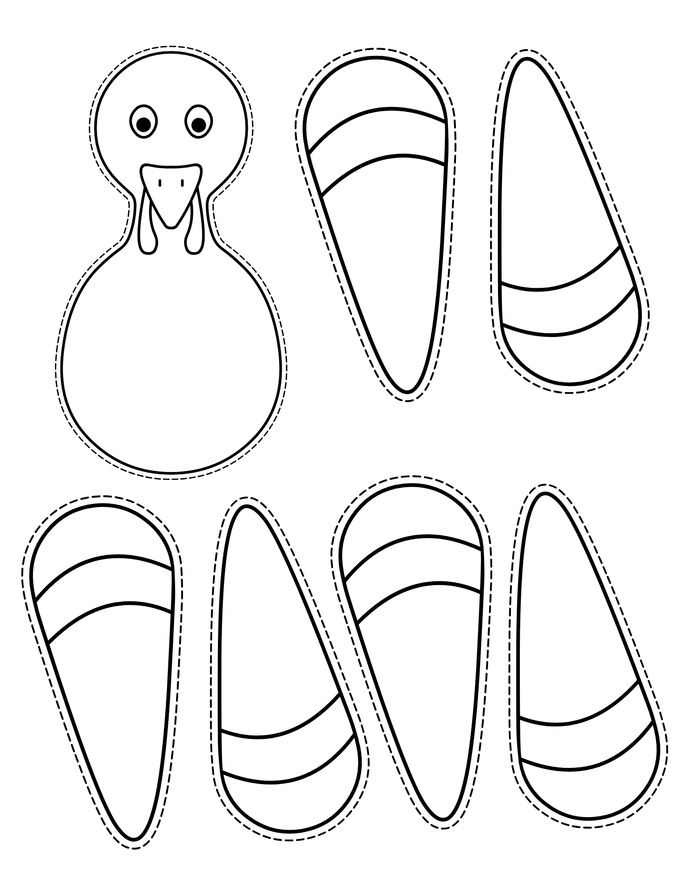

Grace Dittman
Block 2 Math
Block 3 Math
ESS
Lesson Plans
Résumé
Photos
Search
Home
›
Block 2 Math
›
Week 12
›
Activities
›
November Literacy Groups
›
Stuff the Turkey
›
Stuff the Turkey Counting Cards (6 of 6)
Stuff the Turkey Counting Cards (6 of 6)
Turkey Template.png
← StuffTheTurkey
Open full size

Goes with
Stuff the Turkey Counting Cards (1 of 6)
CountingCard.png
Stuff the Turkey Counting Cards (2 of 6)
CountingCard2.png
Stuff the Turkey Counting Cards (3 of 6)
CountingCard3.png
Stuff the Turkey Counting Cards (4 of 6)
CountingCard4.png
Stuff the Turkey Counting Cards (5 of 6)
CountingCard5.png
← StuffTheTurkey